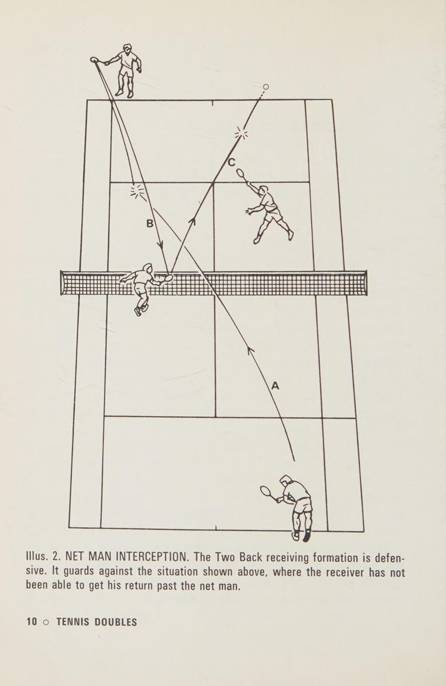
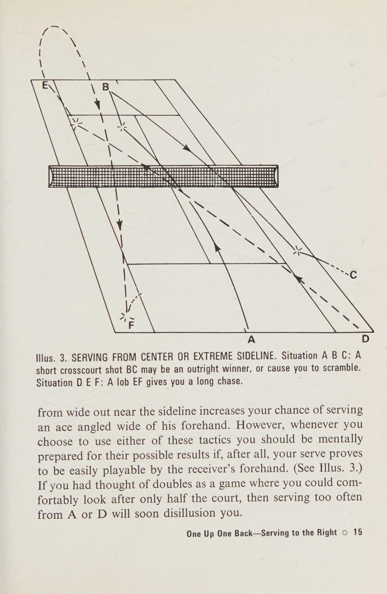
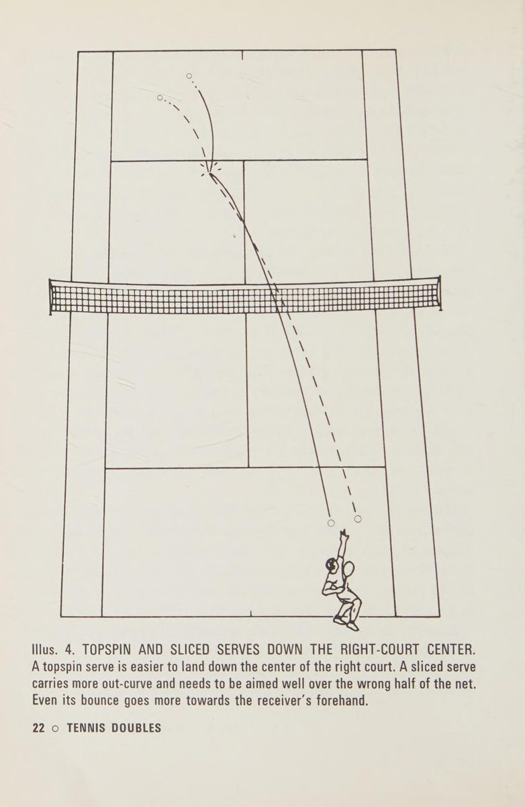

1. Ba Đội Hình Căn Bản Trong Thi Đấu Quần Vợt Đôi
Khi có nhiều hơn một người tham gia vào việc vận hành một trận đấu, cấu trúc đội hình (formations) lập tức trở thành yếu tố quyết định cục diện. Đánh đôi không chỉ đơn thuần là hai người chơi đơn đứng chung một nửa sân; đó là một hệ thống phối hợp hình học đòi hỏi sự hiểu biết sâu sắc về không gian và trách nhiệm che chắn.
Trong quần vợt hiện đại và kinh điển, có ba cấu trúc đội hình chính:
- Đội hình Hai Đứng Sau (Two Back): Cả hai người chơi đều đứng sau vạch cuối sân (baseline). Đây thuần túy là thế trận phòng thủ bị động, thường được sử dụng khi đối thủ sở hữu những quả giao bóng hoặc quả vô-lê quá uy lực mà bạn không thể giữ vị trí trên lưới. Điểm yếu chết người của Hai Đứng Sau là bỏ trống hoàn toàn quyền kiểm soát lưới, nhường thế chủ động tấn công cho đối phương.
- Đội hình Một Trên Một Dưới (One Up One Back): Một người chơi kiểm soát vạch cuối sân trong khi đồng đội chiếm lĩnh vị trí trên lưới (net man). Đây là đội hình phổ biến nhất ở cấp độ phong trào và bán chuyên nghiệp, tạo ra sự cân bằng giữa khả năng bao quát sân sau và cơ hội bắt lưới dứt điểm ở cự ly gần.
- Đội hình Hai Đều Trên Lưới (Net Game): Cả hai người chơi đều tiến sát lưới để thiết lập một bức tường rào chắn lưới (net barrier). Đây là trận địa tấn công tối thượng của các tay vợt đôi đẳng cấp thế giới, nơi mọi đường bóng trả qua đều bị chặn đứng và kết liễu bằng những cú vô-lê sắc bén.

Hình 1 (Illus. 2): Pha can thiệp cắt bóng (net man interception) của người đứng lưới. Đội hình Hai Đứng Sau rất dễ bị khai thác nếu cú trả bóng không đủ hiểm hóc để vượt qua tầm với của người đứng lưới đối phương.2. Tương Quan Giữa Đội Hình Chiến Thuật Và Kỹ Thuật Đánh Bóng
Một quan niệm sai lầm rất lớn của nhiều tay vợt là cho rằng kỹ thuật đánh bóng (strokes) quan trọng hơn sơ đồ đội hình (formations), hoặc ngược lại. Paul Metzler nhấn mạnh rằng hai yếu tố này là hai mặt của cùng một đồng xu. Đội hình chiến thuật tạo ra vị trí và không gian, nhưng chất lượng cú đánh quyết định bạn có duy trì được vị trí đó hay không.
Nếu bạn cố gắng áp dụng đội hình Hai Đều Lên Lưới (Net Game) mà không sở hữu một quả giao bóng có độ nảy khó chịu hoặc cú vô-lê bước một (first volley) ổn định, bạn sẽ biến đồng đội và chính mình thành bia đỡ đạn cho những cú bắn thẳng người (body shots) hoặc lốp bóng qua đầu (lobs). Ngược lại, dù bạn có cú thuận tay bão táp nhưng lại chọn đứng sai vị trí trong đội hình Một Trên Một Dưới, bạn sẽ liên tục bị đối thủ khai thác khoảng trống giữa sân (center line).
3. Nghệ Thuật Giao Bóng Trong Đội Hình Một Trên Một Dưới
Khi bạn là người giao bóng trong đội hình Một Trên Một Dưới, bạn không chỉ giao bóng để tìm kiếm điểm trực tiếp (ace) mà quan trọng hơn là để tạo cơ hội cho người đồng đội đứng lưới can thiệp dứt điểm (poach/intercept). Quả giao bóng trong đánh đôi phải được tính toán kỹ lưỡng theo các nguyên lý sau:
Nguyên Lý 1: Chiều Sâu Điểm Rơi (Depth) Luôn Đè Bẹp Tốc Độ Thuần Túy
Nhiều người chơi lầm tưởng giao bóng càng mạnh càng tốt. Trong đánh đôi, một quả giao bóng tốc độ cực cao nhưng chạm đất cạn (short service) sẽ nảy lên ngang tầm thắt lưng của người trả bóng, cho phép họ vào đà quét một cú bạt góc chéo sân cực hiểm. Ngược lại, một quả giao bóng có điểm rơi sâu sát vạch cuối ô giao bóng (deep service) sẽ buộc người nhận phải lùi lại, làm tăng quãng đường bóng bay và mang lại thêm thời gian quý giá cho người đứng lưới của bạn phản xạ can thiệp.

Hình 2 (Illus. 3): Tác động của vị trí đứng giao bóng. Đứng sát vạch trung tâm (center mark) giúp bảo vệ trung lộ và mở góc giao bóng xoáy nảy; trong khi đứng dịch ra vạch biên (sideline) tạo góc kéo đối thủ ra ngoài sân nhưng để lộ hành lang giữa sân cho đối phương phản công.4. Vị Trí Đứng Giao Bóng: Trung Tâm Hay Sát Biên?
Quyết định đứng ở đâu dọc theo vạch cuối sân trước khi giao bóng là lựa chọn chiến thuật then chốt:
- Đứng sát điểm đánh dấu trung tâm (Center Mark): Đây là vị trí được khuyến nghị cho hầu hết các tình huống giao bóng bên ô bên phải (Deuce Court) lẫn ô bên trái (Ad Court). Đứng ở đây rút ngắn quãng đường bạn phải di chuyển để bọc lót trung lộ, đồng thời cung cấp góc đánh tốt nhất để nhắm vào vạch chữ T (center T) — điểm chết khiến người trả bóng khó có thể tạo góc đánh chéo sân hiểm hóc.
- Đứng dịch ra phía vạch biên (Sideline): Vị trí này mở rộng góc cắt (angle of delivery) giúp bạn kéo người nhận bóng bay ra tận hàng rào bảo vệ. Tuy nhiên, cái giá phải trả là một khoảng trống mênh mông mở ra ngay giữa sân. Nếu người nhận bóng sở hữu cú trái tay dọc dây hoặc quả vuốt bóng chéo góc sắc lẹm, người đứng lưới của bạn sẽ hoàn toàn bị cô lập.

Hình 3 (Illus. 4): Chiến thuật giao bóng dọc dây trung lộ (Center T). Quả giao bóng xoáy topspin hoặc slice ép bóng găm thẳng vào góc chữ T làm giảm tối đa góc đánh của đối thủ, ép họ trả bóng vào tầm với của người đứng lưới.5. Các Loại Hình Quả Giao Bóng Trong Trận Địa Đôi
Paul Metzler phân tích sự khác biệt về công năng chiến thuật giữa ba kiểu giao bóng phổ biến:
- Giao bóng phẳng cực mạnh (Flat/Cannonball Service): Mang lại uy lực trực tiếp nhưng tỷ lệ vào sân thấp và bóng bay theo quỹ đạo thẳng, dễ bị bắt bài nếu đối thủ kê mặt vợt chặn lại (block return). Khi bóng dội lại quá nhanh, chính người giao bóng cũng không kịp hoàn thành bước di chuyển thăng bằng.
- Giao bóng xoáy cồng (Topspin/Kick Service): Đây là quả giao bóng lý tưởng hàng đầu trong đánh đôi. Quỹ đạo bóng vồng cao qua lưới tạo độ an toàn tuyệt đối trước mép lưới, sau đó cắm dốc và nảy bổng vượt quá tầm vai của đối thủ, vô hiệu hóa hoàn toàn ý đồ tấn công phủ đầu của người trả bóng.
- Giao bóng xoáy ngang (Slice Service): Quả bóng xoáy cuộn chém theo chiều ngang, trượt sát mặt sân sau khi chạm đất. Khi giao vào ô bên phải, cú slice kéo người trả bóng văng ra ngoài sân đôi; khi giao vào ô bên trái đối với tay vợt thuận tay trái (left-hander), bóng sẽ xoáy găm thẳng vào thân người người nhận, khóa chặt không gian vung vợt.